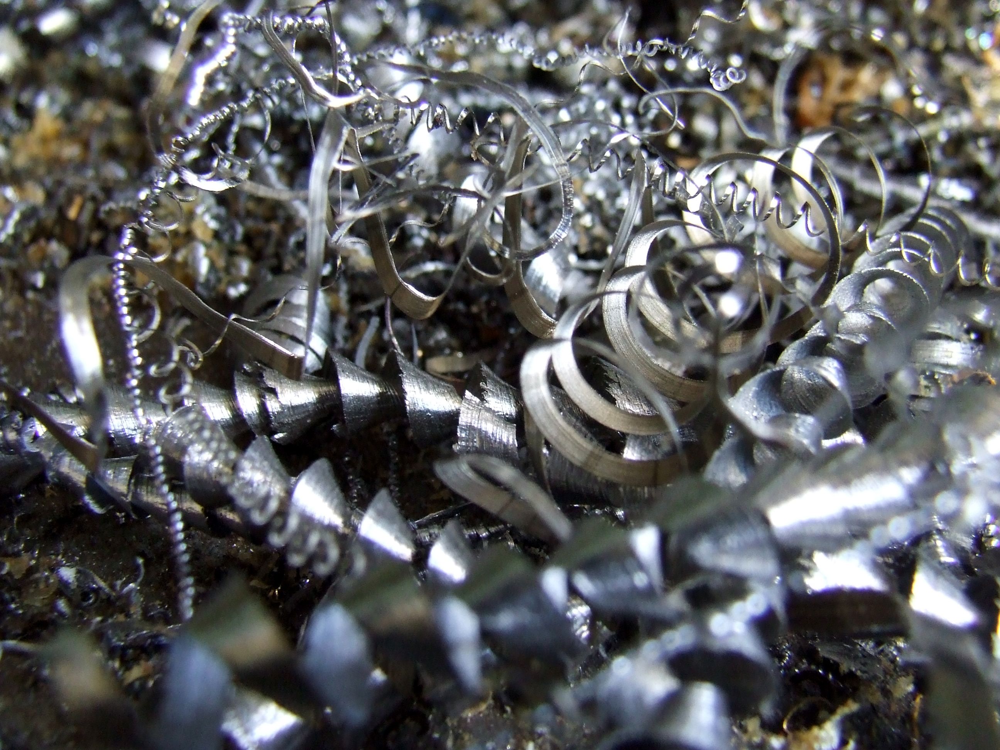
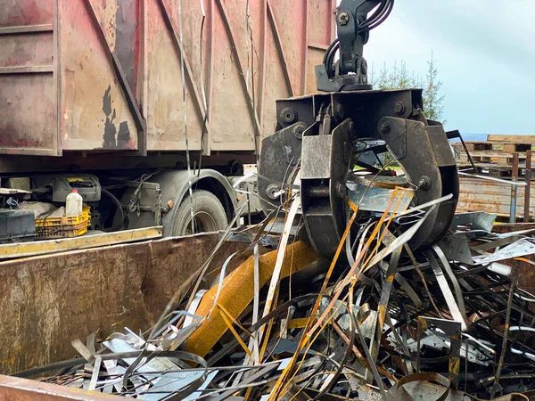
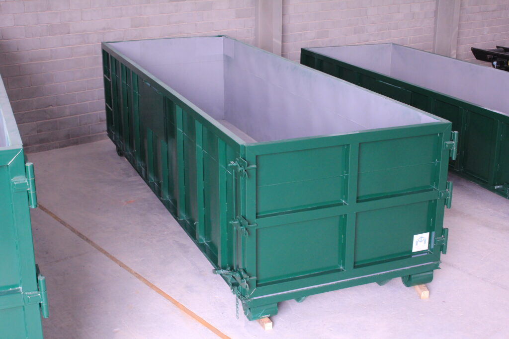
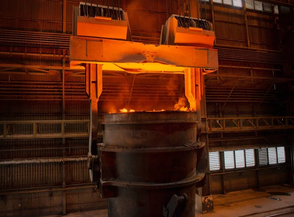

Scrap Collection
MetaScrapMX provides scrap collection services for maquiladoras, industrial plants, and businesses that need a reliable partner to keep their operations clean, organized, and compliant with responsible recycling practices. Our work is focused on materials recovery, operational support, and simple communication with every client.
Collections adapted to your schedule
Coordinate with our team to schedule regular scrap pickups that fit your production needs and timelines, ensuring a smooth and efficient process.
Environmentally Responsible Disposal
We ensure that all scrap materials are disposed of in an environmentally responsible manner, complying with all local and national regulations.
Weighing and documentation on the spot
Our team provides on-site weighing and documentation for all collected scrap, ensuring transparency and accurate record-keeping for your business.
Expert Team
Our team of professionals brings extensive experience and knowledge to every scrap collection project, ensuring quality service and customer satisfaction.

Clean Up
MetaScrapMX offers comprehensive clean-up services designed to maintain a safe, organized, and productive facility. Our team handles the removal of industrial waste, scrap accumulation, and material discharge with professionalism and efficiency.
Complete Facility Clean-up
From production areas to storage zones, we provide thorough cleaning services that keep your facility organized and compliant with health and safety standards.
Trained and Equipped Team
Our specialists use appropriate equipment and techniques to handle industrial clean-ups safely and efficiently, minimizing downtime for your operations.
Flexible Scheduling
We coordinate clean-up activities around your production schedule to ensure minimal disruption to your daily operations.
Responsible Waste Disposal
All materials collected during clean-up are disposed of responsibly, with proper classification and environmental compliance throughout the process.

Closed-Loop Recycling
Our Closed-Loop Recycling program recovers value from industrial scrap by reintegrating materials back into the supply chain. We help businesses reduce costs while supporting environmental sustainability.
Material Separation and Classification
We classify scrap by type and quality, ensuring that each material stream is properly sorted for maximum recovery value and processing efficiency.
Recovery Reports and Traceability
You receive detailed documentation showing recovery percentages, material values, and the complete chain of processing for full transparency.
Partnership and Buyback Programs
Participate in our buyback programs where recovered materials can be exchanged for credit or cash, creating additional value recovery opportunities.
Sustainability Impact
By closing the loop on your scrap, you reduce waste disposal costs and contribute to environmental sustainability goals while improving your bottom line.